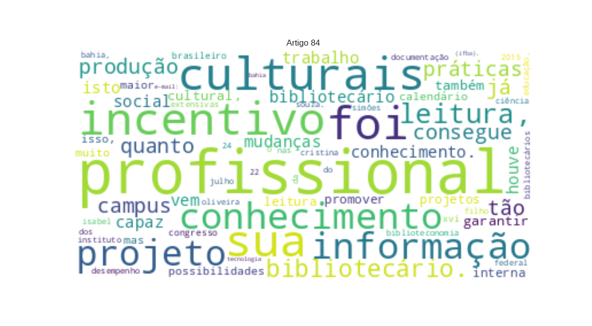

84 - SOUZA, Isabel de O._O desempenho dos bibliotecários nas práticas extensivas do IFBA, campus Simões Filho.txt

XVI
Congresso Brasileiro de Biblioteconomia
LOC
e Documentação 22 a 24 de julho de 2015 O
DESEMPENHO
MISC
DOS
BIBLIOTECÁRIOS NAS
MISC
PRÁTICAS EXTENSIVAS DO
INSTITUTO FEDERAL
ORG
DA
BAHIA
ORG
,
CAMPUS SIMÕES FILHO
ORG
Isabel Cristina de Oliveira Souza
PER
.
Instituto Federal de Educação, Ciência e Tecnologia da Bahia
LOC
(
IFBA
ORG
). E-mail: falecomisabelsouza@gmail.com.
Geocivany Lima Cardoso
PER
.
Instituto Federal de Educação, Ciência e Tecnologia da Bahia
LOC
(
IFBA
ORG
). E-mail:
geocivany@ifba.edu.br
MISC
INTRODUÇÃO
ORG
Hoje as bibliotecas são mais dinâmicas e tem um público diversificado. Acentuada produção de informação em material impresso (livros, revistas, apostilas, encartes, manuais), que a biblioteca já não consegue organizar em tempo hábil para disseminar para a sua clientela. Tão importante quanto os serviços prestados pela biblioteca, o bibliotecário precisa desenvolver meios que a tornem um ambiente acolhedor e agradável, favorável à interação entre informação e conhecimento. Sobretudo, repensar e assumir o seu papel social, transformando a biblioteca como um espaço sociocultural, capaz de se adequar as transformações sociais e tecnológicas. Com o avanço tecnológico houve muitas mudanças mundo do trabalho. Com o profissional bibliotecário não foi diferente. Ele passou por mudanças significativas refletindo o quanto conseguiu ser flexível e capaz de se adaptar em sua área de atuação de maneira inovadora. No bojo dessas mudanças, o papel social do profissional vem se diversificando no seu fazer diário. Isto significa procurar entender as novas demandas que surgem, as novas maneiras de responder a estas demandas criando novos métodos e formas de trabalho através de práticas extensivas. Nesse sentido, garantir o acesso às atividades de extensão como processo acadêmico é indispensável também ao discente, pois contribui para a sua formação artística e cultural, ao desenvolvimento do senso crítico e da responsabilidade social. �A
Biblioteca do Instituto Federal de Educação, Ciência e Tecnologia da Bahia
LOC
(
IFBA
LOC
),
Campus Simões Filho
LOC
, cumpre este papel ao idealizar serviços de extensão como a
Jornada do Conhecimento
MISC
que aconteceu em 2009.
Relato
PER
da experiência
A Biblioteca do IFBA/ Campus Simões Filho
MISC
realizou em 2009, o projeto a
Jornada do Conhecimento
MISC
, aproveitando o momento de comemoração dos cem anos da educação profissional e tecnológica na
Bahia
LOC
. O principal objetivo foi o de por em prática um evento que pudesse servir como veículo de valor informativo da história desta centenária
Instituição
MISC
, até então desconhecida da maioria dos componentes da comunidade interna. Após um intervalo para aprimoramento das ideias, em 2012, foram retomados os projetos com atividades artísticas e culturais como: minicursos, palestras, feira de livros, encontro com escritores, etc., com os seguintes objetivos:
Promover
LOC
o intercâmbio de conhecimento entre a comunidade e a equipe da biblioteca com atividades culturais, de incentivo à leitura e de capacitação. Estimular a produção literária e intelectual da comunidade escolar. No ano de 2012 a
Biblioteca do IFBA
LOC
,
Campus Simões Filho
PER
, aproveitou a data alusiva à
Semana do Livro
MISC
e da
Biblioteca
ORG
que acontece nacionalmente, sempre na última semana do mês de outubro, para promover ações de integração com a comunidade interna e divulgar seus produtos e serviços oferecidos. Assim, iniciou a
I Semana do Livro
MISC
e da
Biblioteca
ORG
, com projeto de extensão em incentivo à leitura, tendo em vista que seus frequentadores sempre se mostraram leitores assíduos e ávidos pelo conhecimento. O resultado desse evento foi tão satisfatório que tem acontecido anualmente com o desenvolvimento de várias atividades culturais e de incentivo à leitura, visando incentivar o gosto pela leitura, pelo uso da biblioteca e pelas manifestações artísticas e culturais como instrumento de transformação social. No ano de 2014 o projeto foi submetido ao edital 02/2014 da
Pró-reitoria de Extensão
MISC
, órgão responsável pela seleção de
Projetos de Extensão
MISC
, onde pôde contar com uma verba de
R$
LOC
de 8.300,00 para gastos com camisas, marcadores de páginas, sacolas retornáveis e os brindes para premiação das atividades culturais. Tudo isto vem corroborar com as afirmações de
Cabral
PER
(1998,
p.44
PER
) quando diz que “O trabalho de ação cultural bibliotecária pode ser considerado como um campo de atuação profissional extremamente rico e transformador”. Ela ainda acrescenta ser de fundamental importância, que o profissional possa constantemente “repensar sua �prática tradicional e buscar novas possibilidades e perspectivas inovadoras de atuação, que apontem para uma biblioteconomia comprometida com a democratização cultural, onde o profissional assume uma nova postura diante da realidade que o cerca”. (
CABRAL
PER
, 1998, p.44). Percebe-se com isso, que desde o início em 2009 houve grandes conquistas, o que nos incentiva a continuar desenvolvendo novos projetos, para atender a crescente demanda por informação e conhecimento e principalmente, pela necessidade de tornar a biblioteca um organismo vivo.
Concordamos
PER
com
Almeida Junior
PER
(1992, p.92) no que ele se refere ao movimento de sairmos do maniqueísmo profissional que leva à “postura apática, passiva” e ampliarmos nossa função social para atuarmos no seio da comunidade como parte integrante nos processos de “alteração e mudança de pensamentos e comportamentos” .
Considerações Finais
MISC
Ainda há muito a construir, mas muito se avançou. As dificuldades no caminho são enormes, mas no decorrer se adquire experiência e se consegue lidar com as adversidades. O próximo passo, implementar o evento no calendário acadêmico ou realizar parceria com outro evento que já conste no calendário para garantir maior visibilidade e credibilidade. Com isso, hoje, a biblioteca do campus além dos serviços tradicionais comumente oferecidos tem como tarefa também construir e manter projetos artísticos e culturais para atender a demanda da comunidade interna e, no futuro, externa. Isso porque
Identificamos
LOC
que, desenvolver novas funções relativas ao incentivo à leitura e disseminação da cultura popular, poderá proporcionar uma maior participação da comunidade externa nessas atividades. Almejamos conquistar essa clientela para nossa biblioteca. Palavras-chave:
Bibliotecário
PER
.
Papel Social
PER
. Extensão.
Ações Culturais
LOC
. REFERÊNCIAS
ALMEIDA JUNIOR
PER
.
Oswaldo Francisco
PER
de.
Biblioteca Pública
LOC
: ambiguidade, conformismo e ação guerrilheira do bibliotecário.
São Paulo
LOC
:
APB
ORG
,
n.15
MISC
, 1995.
CABRAL
PER
,
Ana Maria Rezende
PER
. Ação cultural: possibilidades de atuação do bibliotecário.
In
MISC
:
VIANNA
ORG
,
Márcia Milton
PER
;
CAMPELLO
LOC
,
Bernadete
MISC
; MOURA,
Victor Hugo Vieira
PER
. Biblioteca escolar: espaço de ação pedagógica.
Belo Horizonte
LOC
:
EB
ORG
/
UFMG
MISC
, 1999. p. 39-45. Seminário promovido pela
Escola de Biblioteconomia da Universidade Federal de Minas Gerais
ORG
e
Associação dos Bibliotecários de Minas Gerais,1998
ORG
,
Belo Horizonte
LOC
. �